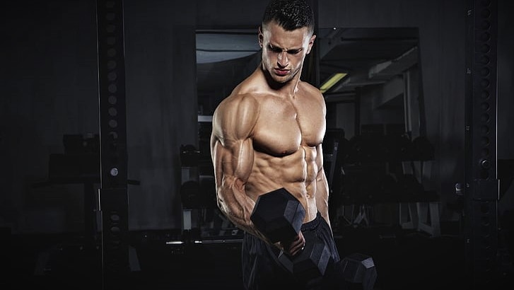
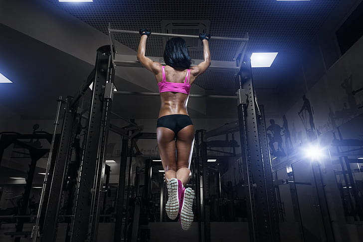

Weight-Lifting is a type of strength training using weights for resistance. By creating a stress to the muscles performed with free weights (e.g. barbells and dumbbells) or by using weight machines, these exercises will enable muscles to be activated and get stronger.
Body-Lifting is an art form of using your own bodyweight as a means to maximize human power and athletic ability. With compound exercises, that is why multiple muscle groups are worked on all at once , employ a wide variety of muscle groups and the stability muscles that keep the body moving smoothly.

You can build serious strength. You might be thinking: "How, if you're not hoisting barbells or dumbbells?" But you can accomplish a lot using just your own bodyweight, says Calabrese. If you're a 150-lb woman doing a bodyweight pull-up, you're effectively lifting 150 lbs.
Start with the Prime Fitness workout plans where you'll be able to assess your strength.
Work out for a few days to get your body ready for the next step.
Consistency is key. Watch yourself get stronger and day-by-day closer to your goals!